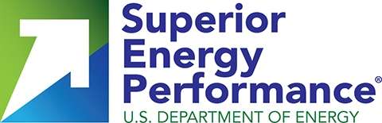

DESCRIPTION
This Measurement and Verification Case Study webinar is the second in a series of case study webinars to highlight the successes of facilities that have achieved Superior Energy Performance (SEP) program certification. This webinar highlights the success of HARBEC Inc.’s Ontario, NY facility in achieving Platinum-level SEP certification in November 2013 and improving their facility energy performance by 16.5% over three years, saving over $52,000 annually with no capital investment (see the cost-benefit case study). HARBEC has aggressively pursued alternative energy sources including renewable energy and combined heat and power. This case study demonstrated how the SEP M&V Protocol was able to effectively model this diverse energy supply and to demonstrate a meaningful measure of energy performance improvement. Download the presentation slides.
TEXT VERSION
SEP Measurement And Verification Case Study Webinar: HARBEC – SEPTEMBER 9, 2015 – Paul Scheihing (U.S. Department of Energy); AMy Bechtold, Jeff Eisenhauer, Bob Bechtold (HARBEC); Bill Meffert, Randy Green (Georgia Institute of TechnoloGy)
>> Paul Scheihing
Welcome to the measurement and verification case study webinar. Today we’re going to highlight HARBEC in the next hour. This is Paul Scheihing from the U.S. DOE. Other speakers today will be Bob Bechtold, Amy Bechtold, Jeff Eisenhauer of HARBEC and Randy Green and Bill Meffert of Georgia Tech. Next slide please.
[Next slide]
So SEP is a type of strategic energy management program and this diagram we call the continuum, the SEM continuum, where, when you’re doing foundational energy management, such as the ENERGY STAR program, you’re taking a systematic approach and you’re following the plan-do-check-act of continual improvement. Many utilities in the U.S. and Canada are using this type of program. And then we advance one level up to ISO 50001. There you go. Which is an ISO standard. It is the world global standard for energy management systems, similar to the management system framework of ISO 9001 for quality and ISO 14001 for environmental management systems. The thing about ISO 50001 is it is a standard so therefore a third party can certify any facility or company’s ISO 50001 implementation. And then above that, is the SEP program. And the difference between ISO 50001 and SEP would be the additional third party measurement and verification that can be, that can be verified by a third party. So SEP, does include ISO 50001. Next slide please.
[Next slide]
ISO 50001 is a structure management system following a plan-do-check-act cycle of continuous improvement. We show on this diagram the elements of ISO 50001 and in particular we’ve highlighted some of the features of ISO 50001 that makes it a little different than other management systems. And that is, is especially true for energy planning, operation control, measuring and monitoring, where you’re gathering a great deal of data, you’re measuring your, your facility’s energy performance, you’re controlling it around your significant energy uses, and you’re continually measuring and monitoring, those significant energy uses. And it’s this part of ISO 50001 which brings out the energy savings of this very structured, robust standard. If you could hit one more time. The one thing that ISO 50001 does not do, it does not prescribe a specific energy performance improvement criteria. It does say you have to continually improve, but it doesn’t say by how much. If you could hit the next slide.
[Next slide]
And this is what SEP, how it’s different than ISO 50001. So ISO 50001 of course is an internationally recognized best practice. It does require rigorous data collection and measurement of energy data. It has, the advantage it has global relevance to companies that have facilities around the world. Excuse me. Where SEP builds upon 50001 is specific energy performance improvement targets, where you have to improve at least 5% over a three year period. It is the DOE’s program, national program, to drive the implementation of ISO 50001 and it has the transparency of the third party verification that we hope the market will in a greater way reward either through supply chains, utilities, or carbon trading programs. OK next slide please.
[Next slide]
So to date, 14 companies have certified 27 facilities in the U.S., and Canada, Mexico through the SEP program. You can see the companies there. Next slide.
[Next slide]
And today we’re going to focus on HARBEC. We’re going to do a deep dive into how they did their measurement and verification, how they got SEP certified, and talk about the value they received from the program. Next please.
[Next slide]
So the purpose of these case studies are 1. Communicate the business value of SEP, 2. Share the learnings of these pilots, especially on measurement and verification, 3. Demonstrate the rigor and robustness of the SEP verification and develop reference case studies. So what we intend to do is create case studies after these webinars so you folks can read them. And then hear from you. We’re going to take some questions at the end about your interest and any of what we described today. And we’d like to hear from you. OK. I think I’m ready to hand off to Bill Meffert. Let’s, next slide please.
[Next slide]
Bill Meffert of Georgia Tech will now speak.
>> Bill Meffert
Thanks Paul. So I think it’s important that we review, just quickly, what we mean when we measure performance in the SEP program. So I’m going to do a quick overview of how we calculate that performance improvement in the SEP program. The SEP measurement and verification protocol takes a top-down, whole facility approach. So what that means is SEP looks at all of the energy sources that cross the boundary of a facility, whether that’s electricity or natural gas, could be steam, or chilled water or compressed air. It looks at that data and it builds a model around that data,typically a linear regression. And it takes into account the variables or predictors that would predict the variation in the consumption of the different energy sources. So on the right side is a very simple graph for natural gas where it looks at consumption vs. production. And you can see that there is a regression analysis there with a fairly high R2 and this is just a simple example of how we would model energy consumption under the SEP program. So typically in a manufacturing setting you’d expect those drivers or those predictor variables to be production, you’d also look at weather. You might look at other things that could have an impact on energy consumption. You know, it’s required to investigate a lot of variables in this. So once we’ve built these models around the energy sources then, that model helps us predict what our consumption would be. So when we look at performance, we compare what we actually consumed to what the model predicts. You can see there that the performance indicator we use in SEP, or the SEnPI, is typically a ratio of the actual consumption vs. the predicted consumption. And that performance indicator varies from zero to one. If it’s less than one, then we’re actually using less energy than what our models predict, which is a good thing. That means that our performance is improving and that we’re actually saving energy and we’re doing the right things to do that. But along with this top-down performance indicator, SEP requires a bottom-up sanity check. Typically this is a list of projects that have been implemented in a facility and their approximate energy savings, that would reasonably sum up to what the top –down performance indicator predicts. So there’s a lot of rigor required in the top-down analysis but in the bottom-up, it’s considered an approximate analysis so that we can reasonably show that the projects that we’ve implemented in the facility add up to what the model predicts. So that’s just a brief overview of the SEP M&V Protocol. Let’s go to the next slide.
[Next slide]
So I think I’m going to hand it over to HARBEC at this point.
>>Amy Bechtold
Thank you very much. We are an injection molding company in Ontario, NY. Currently we have about 160 employees between three shifts. We work five days a week, sometimes six. Our company does machining, tooling, and injection molding work in various sectors, including medical, aerospace, defense, and automotive. And in November of 2013 we received our ISO 50001/SEP Platinum level certification. You can go to the next slide.
[Next slide]
Our scope and boundary includes our 50,000 square foot facility as well as all of the property surrounding, the grounds and the parking areas. You can go to the next slide.
[Next slide]
>> Jeff Eisenhauer
This is just an overview of how we go about identifying where and how much energy we use throughout the entire facility. So the energy management system gives you tools and guidelines to identify and quantify where and how you’re using energy in the facility. The chart on the top right shows basically our larger consumers, onsite generation systems throughout the facility. It also shows on the bottom bar graph the difference and the larger consumers throughout the facility, blue being electricity and the red being natural gas. It gives you kind of a road map to identify your larger consumers and go through this bottom up sanity check to identify projects or processes that might be able to be improved from an energy standpoint. So through our energy profile, obviously the bar graph on the right, the CHP plant was our largest consumer so we identified basically a no-cost operational change that drove our reduction and our certification. We basically worked with DEKRA which is the third party that verifies all of our energy consumption and gives us our certification for SEP and ISO 50001. I think next slide.
[Next slide]
This is Randy right?
>>Randy Green
Yes, hello. This is Randy Green with Georgia Tech. And what you are looking at, well let me say that we worked with Jeff Eisenhauer at HARBEC to help develop the modeling that was used for their SEP certification. We’re going to take the next few slides to show you how we got to their model, which was really the, part of the reason for this webinar so that we can demonstrate, you know, the flexibility of the protocol in evaluating energy performance and the unique approach that HARBEC has because they have a larger than a normal spectrum of energy sources for an industrial facility their size. There’re three, excuse me, sources of energy crossing the boundary at HARBEC and what you see here is the, the graph for those sources across the time frame we call the achievement period. Sorry my voice went just as I got on. The top line is natural gas, the green line in the middle is the electricity, and you’ll see the light green line at the very bottom representing the electricity supplied by the wind generation. We’ve also identified two projects or changes that HARBEC implemented: one in November of 2012 which was they changed the basis for the way they scheduled and operated the CHP plant and in February of 2013 they installed an additional 850 kW wind turbine. Those, there’s a red line representing the change in CHP and the green vertical line shows when the new wind turbine came online. And so one thing that we can gather from this is, it’s hard to tell from this if there’s any seasonal effects or that there’s any relationship between any of these energy sources to each other. Normally you can see, like in electricity you might see spikes when you expect large cooling loads or in natural gas you might see a seasonal pattern to the heating load in the facility. But those aren’t evident here. And I would say that the traditional approach to modeling for a facility is to look at each energy source independently, and this is the way that we approached HARBEC in trying to understand what their energy performance is. Next slide please.
[Next slide]
So we’re going to walk you through the, how the traditional approach was a challenge for HARBEC because in some months they consume a lot of natural gas which is converted to electricity and in other months it’s less, so it really clouds the electric consumption at the facility. What we see here, at the same time frame, is the total electricity. In this case we’ve combine the wind and the purchased electricity to just look at electricity, and the natural gas is the top, or the brown/orange line. The grey line at the bottom is production, so we wanted to get an understanding of were there any patterns in energy consumption related to production for either of these energy sources and there was nothing really evident from this when we looked at this originally. And you’ll see that in the statistics that we tested for these models in a couple slides. Next slide please.
[Next slide]
So here is where we looked at some possible correlation with weather data. The red line at the bottom are the heating degree days for the regional airport there where HARBEC is located and the blue line is cooling degree days. This was NOAA supplied weather data; again, track across the time frame, and we can see that electric energy consumption and the natural gas energy consumption. And you can see, maybe in electricity there is a, there seems to be coincidental peaks with cooling degree days, but peaks in electricity that certainly doesn’t explain all that we see going on with the electricity model. And no correlation here certainly between the heating degree days and natural gas. So it was a challenge to understand what the variables might be, as we looked at how to develop this model. So next slide please.
[Next slide]
We’ll see just some typical values that we were getting as we tried to model both electricity and natural gas. And I’m only showing you the tip of the iceberg in relation to what was tested and evaluated for their facility. The yellow cells in that table represent the values that do not conform to the M&V, SEP M&V Protocol and so the model requires a valid, or SEP requires that the p-values for the variables that we use in the model must be less than 0.1, and you can have some p-values less than 0.2. We’re not going to try and explain the M&V Protocol today but you can certainly download that and read it on your own from the SEP website. The models must have an R2 of 0.5 or greater and so we see, and the p-value for the model of less than 0.1. And so as we tried to model natural gas against production, heating degree days, cooling degree days, we also tried some other weather variables, which I didn’t list here, which included average temperature, because they had wind generation we looked at wind speeds, which you can also get from NOAA, if that is of interest to any of you listening. We also considered including the electricity generated in the CHP plant as a product, trying to explain the natural gas. And I’ve listed 32 here and it was probably actually more than that. Different models were investigated and they all had similar results to that. We had weak R2 values, we did not have p-values for the variables that we thought should be related, and you could understand how this might happen, in a lot of natural gas is purchased in offsetting electricity purchases in the months that the CHP plant had high production and inversely so in the months that they were low, so how we’re we going to help HARBEC demonstrate what they knew to be was a significant improvement in performance? Because their numbers were leading them to believe that they had a significant reduction. So the approach at this point was to back up and take a look at combining energy sources, and it was a little bit of a process to get to that step. If you go to the next slide.
[Next slide]
You’ll see, if we take total energy as being converted in consistent units, we can combine electricity and natural gas consumption, and you can see that in the orange line, or the brown line, at the top. Production is in grey, heating degree days in red, and cooling degree days in blue. And so, the model’s built from the observation of this data, but you can see a couple of trends here. One, we can see a general trend with total energy and production. So in the months leading up to 2012 there was a slight increase and we can see that general trend in the energy data, likewise production drops off a little bit in 2013 and we see energy drop off as well. So there does seem to be some correlation here. Likewise, there is a, a reasonably coincidental peak with cooling degree days and energy. And those are just anecdotal interesting observations, we can’t use this to validate our model. I’ll show you how we do that on the next slide. So if you’ll go to the next slide please.
[Next slide]
So these are the results from the tool, the EnPI Tool that you can download at the DOE Superior Energy Performance website. And so if we take total source energy and try to model against these variables, and again we tried a broad range of variables, and we ended up identifying that production and cooling degree days had a significant impact relative to our model. The statistical test that we have again is that the p-value for variables must be less than 0.1. You can see that we, we have that for production and for cooling degree days at 0.039 and effectively zero. There are some numbers out in the six and seven decimal place. The R2 value was quite good at 0.91 for this model, the p-value for the model was exceptionally well. So the other thing that the Protocol requires is that the model reasonably explain the process. So we were interested to understand, certainly production seems to have a relationship to energy. They are in the business of injection molding, though the variable used for that was thousands of pounds of resin that they processed in a timeframe. And so we had a production variable that seemed consistent. Likewise, a large amount of energy goes to creating chilled water as well as air conditioning the work space. They air condition the plant to try to maintain moisture levels which can be absorbed by the plastic or the resin that they’re molding, and can effect product qualities. They had a large space cooling load as well as a large chilled water load for injection molding, so the fact that we ended up with cooling degree days and production as variables seemed to be a reasonable explanation for what we saw in the model and the process that exists at HARBEC. I just wanted to put the formula for net electricity consumption on there to show you how we arrived at that number and to help you understand the benefit of onsite generation and renewable as it is defined in the Protocol. So we took to the purchased electricity, it was subtracted from that any electricity that they happened to export back to the grid which on certain days, depending on how much CHP there was they were actually net exporters because they have got the large wind turbine. So that was their net purchased energy of electricity and that has a site to source multiplier of three, so that was multiplied by three. And then we added to that value the amount of energy, electricity generated by the wind generation and that has a site to source multiplier of one. So the net effect or benefit of an additional wind turbine was that they got to consume that energy as source energy for what they produced without having to account for the grid generation multiplier of three. Natural gas was just metered purchased natural gas that they had from the local utility. So this is the model that was developed. Next slide please. We’ll look at the results that were achieved.
[Next slide]
Thank you. So again you see the statistical values in the top, the same as on the previous slide, but then I’ve also shown you the coefficients for the variables that were used. So the coefficient for production was 12.218, that is 12.2 million BTUs per thousand pounds of resin processed and the coefficient for cooling degree days is 3 million, 3.01 million BTUs per cooling degree day. The intercept or the baseload in this model calculated is 202,010 million BTUs. So again the baseline was from November of 2009 to October of 2010. We did use the forecast method of adjusting the measurement reporting period of being November of 2012 to October of 2013 and the measured improvement with this linear regression model was 16.52%. In the bottom of the slide you see the formula for the model that was built with the EnPI Tool. Next slide please.
[Next slide]
So this is the bottom-up sanity check. There were two significant projects. There was a small lighting project which would add a little bit to this but it was done right at the end of the reporting period, so it would be hard to account much contribution from that in the timeframe that we measured with the model. But you can see that the additional electricity generated by the wind turbine provided a savings of 5,501 million BTUs. The CHP plant was estimated, it really had a broad spectrum of estimated impacts on performance. We assumed the worst case here to be safe, and had a total of 7,135 million BTUs for the projects that we could account for this improvement. The Protocol requires that the bottom-up sanity check at least validate the achievement level, and the 16 and a half percent that we demonstrated with the SEnPI model, that 16 and a half percent qualified for the Platinum level certification which is a 15% improvement. So the bottom-up sanity check has to validate at least a 15% improvement. And a 15% improvement over their 2009 baseline would have been right at 4,900 million BTUs. And their actual 16 and a half percent as its calculated on the baseline would have been 5,301. These projects actually are estimated to have a bigger impact than what we measured with the tool. But that’s acceptable with the Protocol and certainly we were not uncomfortable with that. Next slide please.
[Next slide]
>>Amy
OK so as we said before we received the Platinum level of certification with a 16.5% reduction over a three year period. Annual energy savings cost would be $52,000 annually and the cost to implement would be $127,000. So the payback period would be an approximately 2.4 years, but as you know with energy costs they generally go up, so we anticipate it to be less than that period of time. And we look at it that there was a cost up front but the payback comes in savings over time. The costs, a little bit about that information, the cost to implement, that was a lot of our time but also we paid half of our coaches’ costs. And then we were lucky enough that NYSERDA paid the other half of the coaches’ costs. So that gives a little bit of background into the cost to implement. OK next slide.
[Next slide]
>>Bob Bechtold
So this is Bob Bechtold and some closing comments about what you’ve just heard and to just kind of bring it all together and simplify it. That the process that we’re talking about here has allowed us to have a tool that not only taught us initially how to save energy and how to assess savings but forever more puts in place a metric system that, that monitors how we’re doing and keeps us aware so that we can keep improving. And the experience has taught us that it’s perfectly reasonable for us to think that we can keep improving literally forever. And so where we stand today is with more possibilities than almost we can imagine to look forward to implementing over time. We have, we are convinced of the economic opportunity of this, so if someone were to ask why would a small company be involved in something like this? We have to control our bottom line just like some of the large players that you saw in the early slide. And this process does that for us, helps us control the significant cost of doing business. And the positive impacts like the one we just referred to, the $50,000+ per year continues to hit our bottom line every year, year after year after year. As does every single improvement in economics through energy awareness and energy conservation, in reducing our energy bill. For us, though, it is perhaps an unusual twist, we were pursuing trying to understand how to become a carbon neutral company when we first learned about ISO 50001. And we were stuck because we tried to figure out ways to measure it ourselves but wherever we came across where trying to compare ourselves with others, we were missing a way to verify it, to prove that if we were to make this statement about that we were a carbon neutral company, we needed some way to prove it to others. And this, so when ISO 50001 came along, a very large added advantage that it gave us was, through SEP, a third party verification. For us, SEP is imperative. The ISO 50001 is a really neat idea, but you are verifying it and the rest of it just becomes an exercise in ideas and thoughts and hopes and wishes and nothing really tangible. So SEP is the priority for us. And we’ll always be striving for that. So as we attain now, our carbon neutral status, because everything about energy can be turned into carbon, for now we know exactly what we need the small percentage that we can’t take care of through our own responsible actions. We go to the carbon market and buy carbon offsets for that that represent a balance at the end of every year. And that at the end, create ourselves as a carbon neutral company. We believe that that’s going to be important in the future. We know we live in a country that doesn’t understand that very well right now, but we also ship to 26 other companies around our country, around the world where there are carbon-based economies. And so we’re watching their lead and what they’re teaching us about importance and how markets will operate in the future. And we’re preparing ourselves to be ready for that. And in our opinion, there are two ways to be prepared. You can buy the solution by going to the market and buy carbon offsets or you can implement changes in your own company and how you use the energy there such as the onsite combined heat and power and renewable that allow you to actually save money as you strive for this carbon responsibility and being able to prove it. So in the future, I imagine we will have more savings than we can imagine. We totally believe that we have unlimited opportunities to reduce the amount of energy per widget forever. And some of the things, or the ways that we’re doing that: we are changing, actually in the future we’re, you saw some confusion and stumbling over our dollars per widget or pounds of plastic that we use now, because we’re the type of company where a significant portion is totaled. We’re actually looking for a more accurate way of measuring by going to, instead of per pounds of plastic, going to dollars of sales. But this only comes after the experience of going through a process like this where you get the tools, you learn the process, and then you raise your awareness and your ability to measure it. And so you can perform even better. And so we’re striving for a more accurate way to measure. We’re also expanding what we’re doing in our energy management strategy that we have implemented as a result of this to take in, eventually, a whole industrial park, but in the earlier stages, we are pushing this model to an eco-industrial park, a version of, if you would, a microgrid, which is a very contemporary idea right now. And so we are connecting ourselves electrically and thermally to a number of other buildings in an industrial park we’re in, and by default, everyone that connects to us also automatically takes this energy success that we carry in the model to the other participants in the park. And finally, we’re working on a device right now that will allow us to measure every electrical event in our company. We believe that it’s very reasonable and very possible and really can become very automatic so just like we monitor our price of materials, our hours on our jobs, things like that in our ERP system, we believe we can deliver to that same mechanism, our energy real time per device. And once it’s there, we can set up conditions and flags that will allow us to know at any point in time if we are exceeding any boundaries, approaching any problems, or unintentionally coming up with some positives that we want to take advantage of doing even more and more. So for us, those are a few of the ideas and reasons why we look forward to a forever future involved with this wonderful tool that the Department of Energy has provided for us. And I will give it back to Paul now to conclude.
>> Paul
Thanks Bob and Amy and Jeff. Great wrap up there. Go to the last slide…
[Next Slide]
We plan to have these every other month. So this is the second one. We’re shooting for one in November. We hope we’ll be able to be announcing that soon. And then if anybody’s interested in going a little deeper with SEP, there is the Certified Practitioner and Performance Verifier Training and I encourage you to go to that website there. And of course we gave you the SEP website. If you’re not currently subscribed to SEP, you can go to the SEP website. You can sign up on the homepage. So Caroline, I think we’re going to open it up for some questions now, alright.
>> Caroline Kramer
Sure, yes, thanks Paul. And I’m opening up the questions pane now and I’ll go ahead and read a few questions. So the first one: what interval did HARBEC use? Was it daily, weekly, or monthly for their data?
>> Bob
It was monthly data.
>> Caroline
Okay, great, thanks. And does the cost to implement include the purchase and installation of the new wind turbine?
>> Bob
Oh, no, it only included our efforts and any other pocket costs, but mostly it was man hours. Other than the costs of paying for the coaches and our time and whatever else, materials, and some trivial things like that to learn the system from Georgia Tech, from DOE, and figure out ways to implement it in our…
>> Randy
Also, Bob, the auto costs right?
>> Bob
Yes
>> Caroline
Thank you, Bob. And what is the factor for electricity output from CHP to convert to source energy?
>> Randy
The efficiency, BT efficiency or…?
>> Caroline
I think just the factor to convert, I guess, from…
>> Randy
With the EnPI?
>> Caroline
Yes, site to source.
>> Randy
Yeah, if you read the protocol, you’re not required to account for the electricity that’s being generated in the CHP. It could be considered as a product variable. And certainly, if you’re exporting it, you’re required to do that. But since we’re already purchasing the natural gas from across the boundary to run the microturbine, the energy to create the electricity was accounted for when we consumed that natural gas. And that’s where it shows up in the model. We would be counting, write it in CHP as well.
>> Caroline
And this looks like another question for you Randy. In slide 18, you used the forecast method for the SEnPI. What was your reason for using the forecast method? Did the selected baseline method result in a better model resulting in the use of forecast?
>> Randy
You know, to be honest, as I sit here today, this was done in 2013. I don’t remember all of the considerations in regard to forecast. But I will say this, that there was not a significant difference between the forecast and the backcast. And so our traditional approach to this process is if you have a forecast method and a model that it syncs to, explain what’s going on, that would be your first approach, but if my memory serves me right, the backcast as well was still above 15%. So there wasn’t a choice between a cheap mid-level here and what we selected.
>> Caroline
Okay and the next question: do customers ever require their suppliers be certified into ISO 50001 or SEP?
>> Bob
So far we have not had the pleasure of finding a customer that looks for that or expects it. We are working hard to try to find that, brand ourselves that way and find customers. There are an awful lot of companies that declare themselves sustainable, very, very large companies doing a lot of it. And yet, when we go to them and try to say to them, “How about using a carbon neutral widget manufacturer,” that kind of draws a blank. So we’re still working hard to find someone. I’m not saying it doesn’t exist. I’m only saying, from one little company’s experience, it hasn’t happened yet.
>> Caroline
And did you want to add any thoughts to that Paul?
>> Paul
Sure. The DOE is working with different groups to work towards that end, getting the market to ask for that. Other spires, in particular, DOE is working within certain sustainable development processes through IEEE, UL for example, where there are sustainability standards being developed for electronic products. And the goal that we’re trying to get to is that if you comply with that electronic standard, then there will be points awarded for original equipment manufacturers that get one or more of their suppliers to be SEP certified.
>> Caroline
Thank you, Paul and Bob. And Randy, I assigned you a few questions specific to the model. And the first one: what percentage of the typical consumption was the base load and was that a surprise or about what you expected?
>> Randy
So the question is: was the base load proportionate to what we would have expected in this? And yeah, that is something we look at. Certainly, we look at the sign of the base load or the intercept and rationally it needs to be positive from our perspective. And all that the sign of the base load really means is that the model is explaining all of the energy consumption above that level. And so, the variables are, I should say, explaining all of it, but there is always potentially some other hidden variable that is explaining part of what’s in the base load. It’s not…we will never try to say that this is the scientific model from the standpoint that it would predict any kilowatt hour of consumption in any given period of time. But in this case, the base load seemed to be proportional to the size of the load, the size of their, you know, consumption and demand and in relationship with the variables as well.
>> Caroline
Okay. And the next question: what processes are there in injection molding that created the thermal load for the CHP?
>> Randy
HARBEC might want to speak to the gist of it, but it’s my understanding that they use absorption chillers to create chilled water. And so the chilled water demand for the cooling as well as the molding was supplied out of that.
>> Bob
Actually, the chiller provides an air conditioning potential that would be extremely cost-prohibitive if we went any other way to produce it. If we had to buy energy to run air conditioning units, to overcome, for example, our molding facility is about 10,000 square feet with 25 injection molding machines in it, so the analogy we use for students and tours and people that visit us is imagine taking a gymnasium and putting 25 industrial pizza ovens in the gymnasium. Run them all at full temperature 24 hours a day. And that’s really what we’re doing. Our 25 machines are melting plastic at 350 to 550 degrees constantly. So the unfortunate result of that is the term called sweat shop which we were trying to overcome for the sake of our employees. But also, it creates a moisture and it increases the amount of moisture in the air due to the water lines that are running through it and the condensation. So we had a dual reason: for the comfort of our employees and for the fact that the majority that the materials that we mold are, as engineers would say, many of them are very hydroscopic. And so before we did this, from May to October, we would run as many as 25 desiccant dryers, which are electric heat resistant powered constantly to try to keep up with cooking our materials dry enough to mold. And during that period of time, our largest continual quality issue was related to moisture in the materials. So we were barely able to keep up. Once we put in the system, the combined heat and power system, the absorption chiller then provided our air conditioning. By using the waste heat, the thermal opportunity as we prefer to call it, of the microturbines, to generate the 44 to 47 degree cold water that we use to air condition, we virtually eliminated the moisture issue. And today we run at any given time, maybe 5 to 8 desiccant dryers. So an enormous reduction in energy was accomplished by that and an amazing improvement in the conditions that the employees work in and all of that came from the thermal opportunities of combined heat and power.
>> Caroline
Thank you, Bob. And Randy, you may have touched on this a little bit, but someone asked why wasn’t backcasting considered for the model as the CHP plant wasn’t under control in the baseline period?
>> Randy
Well, it was considered and I mean, I don’t have a good explanation other than, you know, the forecast certainly worked. The benefit whether you backcast or forecast, the benefit of changing the way they operated CHP was going to show up in either direction. So either take current performance and project that against past performance or take past performance and try to project that against current performance. I wouldn’t say that the CHP was out of control. It was just a different operating paradigm, so they were using CHP, as I understand it, to manage demand. So they were using it to trim. You know, demand calls for electricity which can leave them with a thermal load that’s unusable if they don’t have a cooling load equal to that thermal capacity.
>> Bob
We refer to it as a thermal priority and an electrical priority. And you’re right, initially we were running an electrical priority or load following. But once we saw an…and the result of that is often we were just dumping a lot of heat like the utilities do. But from this process, we learned that that is never the right way to do it and that it’s always got to be thermal priority. And then once we changed to that, once we understood that and it became the only way that we run going forward, we’ve been able to see all of the additional advantages that it gives us by all because of the purpose that we run our combined heat and power plant as a heat generator. And the electricity becomes the byproduct. And if we do that, no matter what the cost of energy, because we’ve had the experience of $12 and more dekatherm of gas at $3 or less, and so as long as we’re running thermal priority, that price doesn’t matter because we will always be at the most efficient, most economical operation opportunity that there is.
>> Bill
Yeah, this is Bill Meffert. If I could just add here, you know as Bob mentioned, putting a CHP plant into thermal following versus electricity priority, you know that’s an efficiency improvement and that’s what you want to capture. So if you forecast what’s going to show up, your actual consumption is going to be less than what the baseline model predicts and that’s going to capture the savings for you. So either you forecast or backcast. Either way, you’re still going to capture that savings.
>> Caroline
We have a few minutes left here for two last questions. What will HARBEC do next year relative to SEP? Can the reporting period change for new analysis or do you start a new four year period.
>> Amy
We started a new 3 year span after we were certified in 2013. So now we’re starting the new goal of 15% reduction again. Does that answer the question?
>> Paul
And I guess you’ll get recertified in 2016 right?
>> Amy
Yes, we’ll have a surveillance audit coming out, but yes, 2016 was the recertification year.
>> Paul
Every 3 years…
>> Amy
And we started our baseline, pardon?
>> Paul
Every 3 years, I’m just…
>> Amy
Yep.
>> Jeff
And just to add on that, we are seeking the same level of certification, 15% reduction again. So it’s just a backup of what Bob said, that there’s an endless effort to reduce energy at the facility every year.
>> Caroline
And the last question: does the SEP approach apply to commercial buildings such as office buildings?
>> Paul
Yeah, we’re actually in a pilot mode right now to test out SEP in the hospitality sector. We are also in a pilot with water and wastewater. And yeah, we’re moving into that sector.
>> Caroline
Great! And that’s all the questions that we have. Oh, it looks like we have one last question. Are you sharing pilot information from those pilots?
>> Paul
We will, yes. Are you talking about the commercial pilots?
>> Caroline
Yes
>> Paul
Yes. We first have to get those sites certified. And we will do that.
>> Bob
And just one additional comment, HARBEC is also signed up for the water pilot with the DOE. And we’re currently trying to strive to be a water neutral company also. So we saw the benefit in the SEP program from an energy standpoint and we brought it right into our facility from a water standpoint also.
>> Paul
Which is great and it’s actually possible to do the kind of modeling that we described today with energy, you can do the same kind of modeling with water, consumption it, right?
>> Randy
Mm, hmm.
>> Paul
Anymore questions? Good questions, thank you. And this webinar is being recorded and we will post it on the SEP website in a few weeks, so you’ll be able to share it with your colleagues who couldn’t make it today. They can watch it. Thank you all for attending. Good discussion, good questions. And thank you HARBEC for a great presentation, as well as Georgia Tech, thank you. This concludes our webinar. Look for the next notice to go out sometime in November. We’ll be sending that out soon. Thank you so much. Bye-bye.